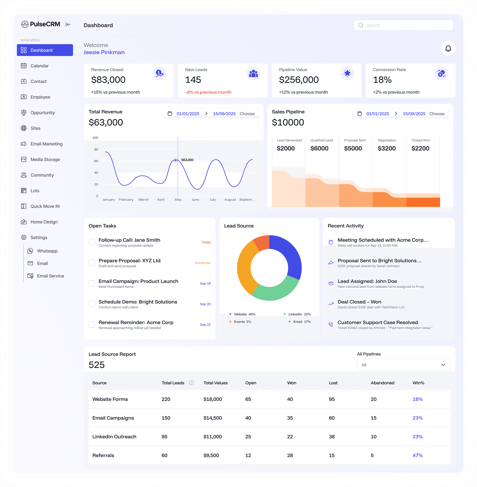
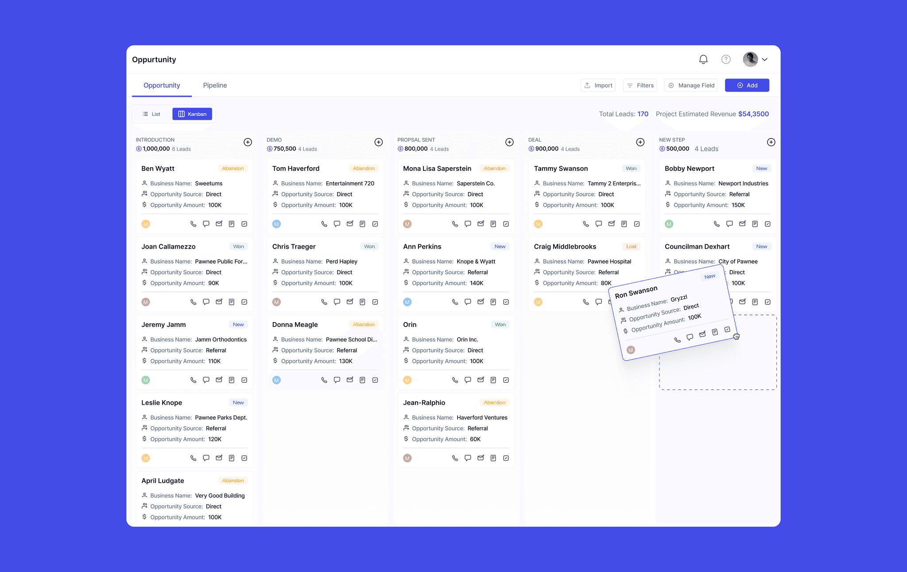
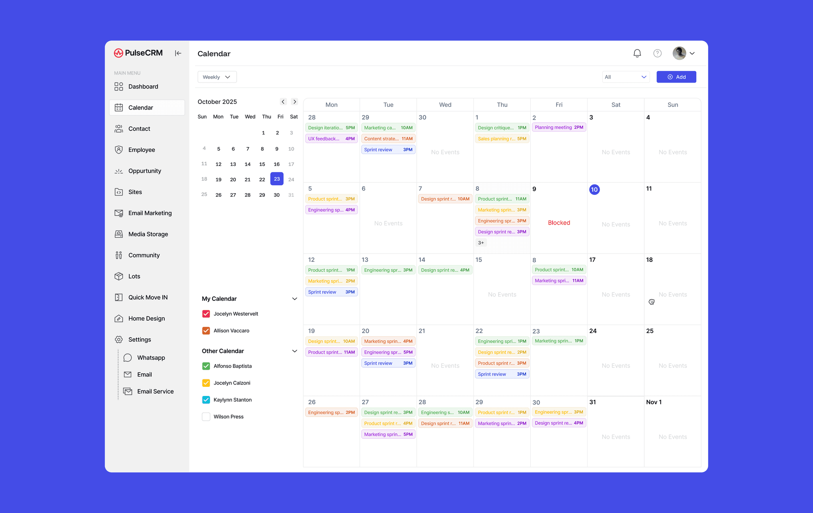
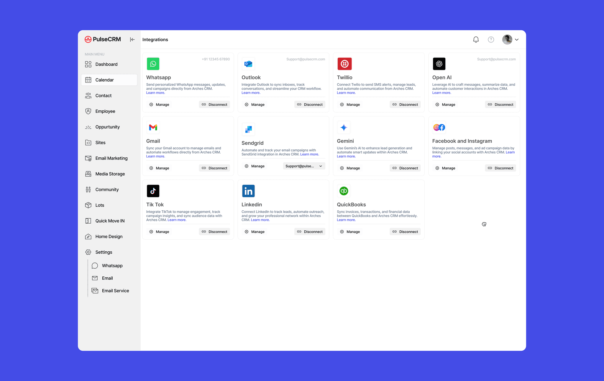
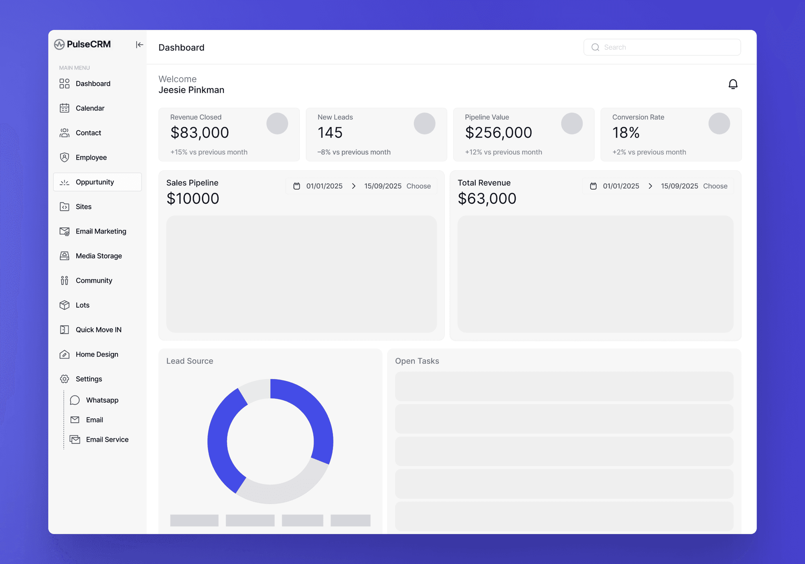
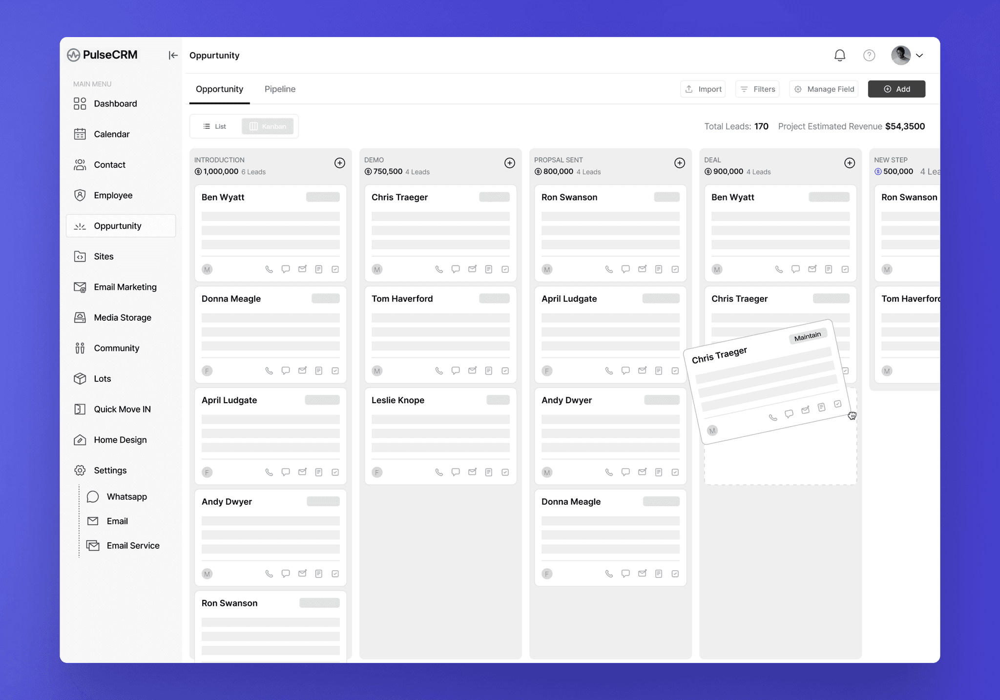
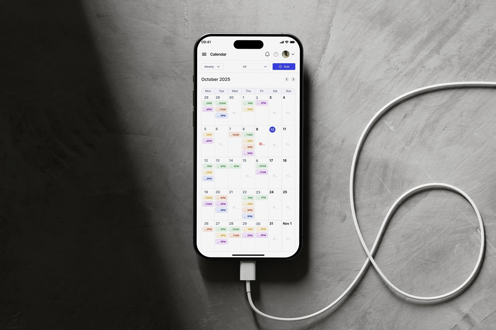

01 / 05 · Client management · 1 month
Client Portal & CRM Experience Design.
Designing a scalable CRM system to simplify customer management, communication, and data-driven workflows for business teams.

The problem
Most CRM tools overwhelm: too many features competing for attention, dense dashboards with little guidance, and inconsistent navigation across modules.
The solution
A cohesive product experience that supports daily workflows, reduces cognitive load, and scales as business needs grow.
The impact
A more structured, intuitive way to manage clients, tasks, and data, so users focus on decisions instead of figuring out the system.
My role
UX/UI Designer, working end to end, from research and user flows to high-fidelity UI and system consistency. I approached it as both a UI/UX Designer and a growing Product Designer.
The central decision
Consistency matters more than novelty in enterprise tools. Users across roles expect predictable behavior across the product.
Project scope
A comprehensive CRM platform to manage customers, communication, sales pipelines, and internal operations from a single system.
The design
Key screens from the product. Select any image to enlarge it.




The story behind the design
Problem, users, and what I learned
01 / Overview
One system for customers, communication, and operations.
This project focused on designing a comprehensive CRM platform that helps businesses manage customers, communication, sales pipelines, and internal operations from a single system.
The goal was not just to design visually appealing screens, but to create a cohesive product experience that supports daily workflows, reduces cognitive load, and scales as business needs grow.
I worked on this project end-to-end — from research and user flows to high-fidelity UI and system consistency — approaching it as both a UI/UX Designer and a growing Product Designer.
02 / The problem
Built to improve productivity. Often doing the opposite.
Most CRM tools suffer from the same core issues:
- Too many features competing for attention
- Dense dashboards with little guidance
- Inconsistent navigation across modules
- Steep learning curve for new users
While CRMs are meant to improve productivity, poor UX often does the opposite — slowing teams down and creating friction in everyday tasks.
The challenge
How can we design a CRM that feels powerful yet simple, structured yet flexible even as complexity grows?
03 / Understanding the users
Different roles. Shared expectations.
The CRM is used daily by multiple roles, primarily:
Operational users
Handling clients, leads, follow-ups, and communication.
Admins
Managing configuration, integrations, and reporting.
Despite different responsibilities, both user groups shared similar expectations:
- Quick access to relevant information
- Clear next actions
- Minimal clicks for frequent tasks
- Predictable behavior across the product
Design principle
Consistency matters more than novelty in enterprise tools.
04 / Wireframes to high-fidelity
From low-fidelity structure to a finished interface.
The wireframes show the dashboard and the opportunity board before visual design was applied. The high-fidelity screens keep the same structure, in line with the principle that consistency matters more than novelty.


05 / Across devices
The same system, on a smaller screen.
The calendar was also designed for the phone, with the same filters, Add action, and colour-coded events as on desktop, in line with the principle of predictable behavior across the product.

06 / Outcome & reflection
Designing scalable systems for data-heavy products.
The final CRM design delivers a more structured and intuitive experience for managing clients, tasks, and data. By simplifying navigation and improving information hierarchy, the interface reduces cognitive load and allows users to focus on decision-making rather than figuring out the system.
From a UI/UX perspective, this project reinforced the importance of designing scalable systems for data-heavy enterprise products. It strengthened my approach to system thinking, consistency, and clarity especially when balancing complex requirements with usability.